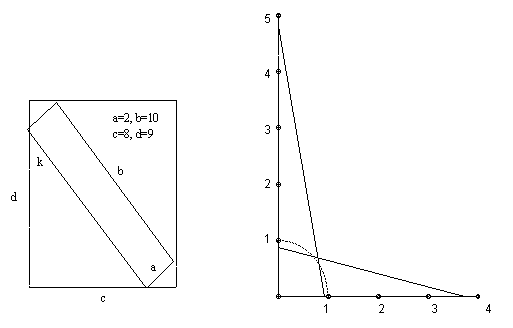

One rectangle has sides a, b and another has sides c, d, where a < c <= d < b and ab < cd. Show that the rectangle with smaller area can be placed inside the other rectangle iff (b2 - a2)2 ≤ (bc - ad)2 + (bd - ac)2.
Solution

Place the long side b with one end on the side length c and the other end on the side length d at an angle k as shown in the diagram. A necessary and sufficient condition for the rectangle to fit is that b cos k + a sin k ≤ d and a cos k + b sin k <= c. Put x = cos k, y = sin k. Now plot on an x-y diagram as shown on the right. Allowed points are k from 0 to 90o and hence (x, y) on the quarter-circle shown from (1, 0) to (0, 1). But the point (x, y) must also lie below both the lines bx + ay = d and ax + by = c. These intersect at the point ( (bd - ac)/(b2 - a2), (bc - ad)/(b2 - a2) ). So a necessary and sufficient condition for the existence of a solution is that this point lies on or outside the quarter-circle. In other words, we require (bd - ac)2 + (bc - ad)2 ≥ (b2 - a2)2.
The left-hand diagram shows the case of fitting a 2 x 10 rectangle inside an 8 x 9 rectangle. It is quite a tight fit, even though the area is much smaller. The condition is 962 ≤ 622 + 742, which is just satisfied.

© John Scholes
jscholes@kalva.demon.co.uk
16 Dec 2002